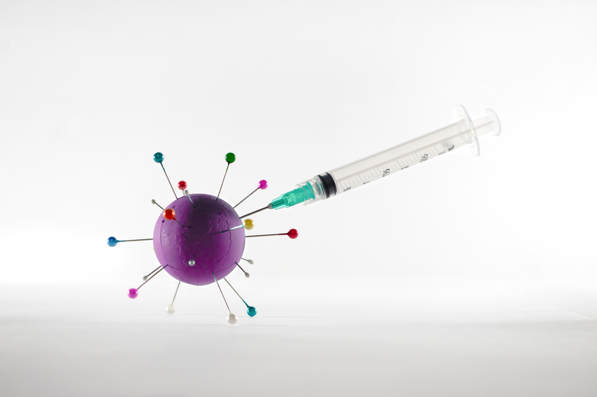

<section class="ghst">
    <div class="lft">
    
    
    </div>
    <div class="lft">
        
        <p>There are no specific, effective treatments or cures for coronavirus disease 2019 (COVID-19), the disease caused by the severe acute respiratory syndrome coronavirus 2 (SARS-CoV-2) virus. But as of April 2022, several medications have been approved in different countries. Patients with mild to moderate symptoms who are in the risk groups can take nirmatrelvir/ritonavir (marketed as Paxlovid) or remdesivir, either of which reduces the risk of serious illness or hospitalization. 
        </p>
        <a class="button" href="https://en.wikipedia.org/wiki/Treatment_and_management_of_COVID-19">More About COVID-19 Treatment</a>
    </div>
</section>


}